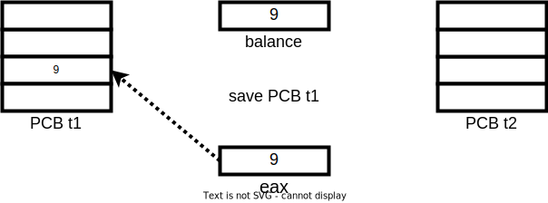
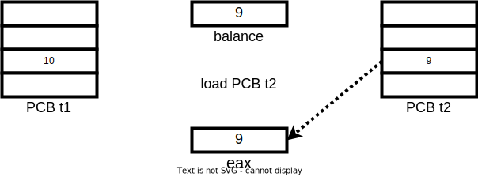
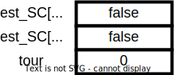
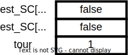
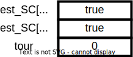

Les Systèmes d'exploitation
Synchronisation des processus et des threads
3A - Cursus Ingénieurs - Dominante Informatique et Numérique
CentraleSupelec - Université Paris-Saclay - 2025/2026
CentraleSupelec - Université Paris-Saclay - 2025/2026

Inter Process Communication - IPC
-
L'OS garantie l'indépendance des processus
- par l'ordonnanceur CPU
- par la gestion mémoire que l'on verra plus tard
- Un processus peut communiquer avec d'autres processus ou avec des périphériques (fichiers, imprimantes, réseaux, ...).
-
Il est nécessaire de mettre en oeuvre un des mécanismes qui permettent
aux processus d'échanger des données et de se synchroniser dans un OS.- Objectif $\to$ coordonner l'exécution et partager l'information entre processus.
Principales méthodes
de communications
| Méthode | Description |
|---|---|
| Signal | Un message système est envoyé d'un processus à un autre. |
| Pipe | Un canal unidirectionnel ; les données émises sont accumulées dans une mémoire tampon (FIFO). |
| File | Lecture/Écriture dans un fichier. |
| Socket | Un flux de données envoyé à travers une interface réseau à un autre processus. |
| Mémoire Partagée | Espace de mémoire alloué à plusieurs processus. |
| Moniteur/Sémaphore | Une structure de synchronisation pour les processus travaillant sur des ressources partagées. |
Problème de la concurrence
Exemple de variable partagée
Soit la gestion d'un compte bancaire
- Une variable partagée
balance - Une fonction
add(1) (balance = balance + 1 ) - Une fonction
sub(1) (balance = balance - 1 ) - Le montant initial du compte est de
9€
Problème de la concurrence
Exemple de variable partagée
On lance 2 threads en parallèle
- Le premier thread exécute
10 000 000 foisadd(1) - Le deuxième thread exécute
10 000 000 foissub(1)
-
Résultat attendu $\to$
balance = 9€
-
Résultat obtenu $\to$
balance = -98599€
Problème de la concurrence
Exemple de variable partagée
Comment expliquer ces erreurs de calcul ?
- les entrelacements se font au niveau du code binaire
- couper entre chaque instruction assembleur
👉

👉

👉
👉

👉

👉

👉

👉

👉
👉

👉

👉

👉

👉

Problème de la concurrence
Conclusion
Après une itération $\to$ balance = 8
alors qu'on s'attend à balance = 9
- Situation de compétition $\to$ erreur dépendant de l'enchaînement temporel d'événements impliquant une ressource partagée (non déterministe)
- difficile à détecter (tests)
- difficile à corriger (debug)
Section critique
-
Une section critique désigne la portion de code dans laquelle un processus
(ou un thread) accède à une ressource partagée.- ressource qui ne doit pas être utilisée simultanément par plusieurs processus.
- exemple $\to$ une variable, un fichier, une structure de données en mémoire
-
Une section critique est un bloc de code qui doit s'exécuter de manière exclusive
- un seul processus à la fois peut y entrer.
- si un processus est dans sa section critique, les autres doivent attendre.
- Sans mécanisme de protection $\to$ deux processus peuvent modifier la ressource en même temps $\to$ erreurs, données incohérentes.
Conditions de la section critique
(selon Dijkstra)
- Lorsqu'on déclare une section critique, on doit garantir qu'au plus un seul processus/thread est dans la section critique.
-
Un bon mécanisme de gestion des sections critiques doit respecter :
- Exclusion mutuelle $\to$ un seul processus dans la section critique à la fois.
- Progrès $\to$ si aucun processus n'est dans la section critique, l'accès doit être possible.
- Attente bornée (bounded waiting) $\to$ tout processus voulant entrer finira par le faire (pas d'attente infinie).
Il faut définir des mécanismes qui garantissent ces trois propriétés
Une solution pour 2 threads
Principes
Un contrôleur central qui:
- met en attente les processus/threads demandant l'accès en SC
- autorise l'accès en SC des processus/threads chacune à son tour
- respecte les 3 objectifs de la synchronisation
- Lorsque $t_{i}$ invoque
commencerSC(i) :- vérifier que $t_{1-i}$ n'est pas en SC
(sinon, attendre) - noter que $t_{i}$ est en SC
- vérifier que $t_{1-i}$ n'est pas en SC
-
Lorsque $t_{i}$ invoque
finirSC(i) :- noter que $t_{i}$ n'est plus en SC
Une solution pour 2 threads
Première implémentation
Une solution pour 2 threads
Première implémentation

id=0 👉
id=0 👉
id=0 👉
id=0 👉
id=0 👉
👈 id=1
id=0 👉
👈 id=1
id=0 👉
👈 id=1
id=0 👉
👈 id=1
id=0 👉
👈 id=1
id=0 👉
👈 id=1
- Les deux threads sont en SC!
- La fonction
commencerSC contient elle-même des SC!
Une solution pour 2 threads
Deuxième implémentation
Une solution pour 2 threads
Deuxième implémentation
id=0 👉
id=0 👉
id=0 👉
id=0 👉
👈 id=1
id=0 👉
👈 id=1
id=0 👉
👈 id=1
id=0 👉
👈 id=1
id=0 👉
👈 id=1
- Problème d'interblocage (deadlock) $\to$ processus bloqués indéfiniment
Une solution pour 2 threads
Troisième implémentation
Une solution pour 2 threads
Troisième implémentation

id=0 👉
id=0 👉
id=0 👉

id=0 👉

id=0 👉
👈 id=1
id=0 👉
👈 id=1
id=0 👉
👈 id=1

id=0 👉
👈 id=1

id=0 👉
👈 id=1
id=0 👉
👈 id=1
id=0 👉
👈 id=1
- Un seul thread est passé, l'autre est en attente
Une solution pour 2 threads
Troisième implémentation
- les processus font de l'attente active $\to$ utilisation inutile du processeur
- privilégier les mécanismes de haut niveau offerts par les OS
Mécanismes de haut niveau
| Méthode | Description |
|---|---|
| Signal | Un message système est envoyé d'un processus à un autre. |
| Pipe | Un canal unidirectionnel ; les données émises sont accumulées dans une mémoire tampon (FIFO). |
| File | Lecture/Écriture dans un fichier. |
| Socket | Un flux de données envoyé à travers une interface réseau à un autre processus. |
| Mémoire Partagée | Espace de mémoire alloué à plusieurs processus. |
| Moniteur/Sémaphore | Une structure de synchronisation pour les processus travaillant sur des ressources partagées. |
Le concept de Moniteur
Un moniteur est un module constitué de :
- objets inaccessibles de l'extérieur
- fonctions manipulant l'objet en exclusion mutuelle
Exemple de moniteurs en Java
-
en Java, on peut déclarer que des blocs de code sont en exclusion mutuelle.
- géré au niveau de la JVM (machine virtuelle de Java)
- utilisation du mot clé
synchronized $\to$ un verrou (lock) sur un objet - un seul thread dans les blocs
synchronized sur le même objet
- un thread, qui possède un verrou, peut exécuter n'importe quelle méthode, vérouillée ou non (verrou récursif).
-
un thread peut verrouiller plusieurs objets $\to$ risque
d'interblocage .
Moniteurs en Java
Exemple d'une variable partagée
Sémaphore - Dijkstra - 1962
- Un sémaphore est un mécanisme de synchronisation utilisé pour contrôler l'accès à des ressources partagées par plusieurs processus/threads.
- Un sémaphore définit un objet partagé permettant de compter
le nombre
de ressources disponibles- qu'on peut acquérir (le sémaphore);
- qui met en attente ceux qui le demandent s'il n'y a pas de ressources disponibles;
- qui traite les demandes dans l'ordre des arrivées.
-
Tous les threads en concurrence sur une ressource doivent partager un même sémaphore
- on acquiert le sémaphore avant d'entrer en SC (l'appel système Unix
sem_wait() ); - on relâche le sémaphore en sortant de la SC (l'appel système Unix
sem_post() ).
- on acquiert le sémaphore avant d'entrer en SC (l'appel système Unix
Sémaphore - Dijkstra - 1962
Implémentation du Sémaphore
Un sémaphore est un compteur protégé qui régule l'accès concurrent
à une ressource.

Sémaphore - Dijkstra - 1962
Les propriétés d'un sémaphore
-
Les fonctions
acquire (sem_wait )/release (sem_post ) doivent être atomiques- elles-même des sections critiques pour le sémaphore ...
- l'OS est en charge de garentir cette propriété
- Vivacité $\to$ on veut passer la main dans le bon ordre
- utilisation d'une file d'attente des PCB géré par l'OS
Utilisation du Sémaphore
Schéma général
Schéma général de l'utilisation d'un sémaphore
Utilisation du Sémaphore
L'exclusion mutuelle
Un sémaphore permettant de faire de l'exclusion mutuelle
est un sémaphore
dont la valeur initiale est 1.
Utilisation du Sémaphore
Demi rendez-vous
Quand un processus veut s'assurer qu'un traitement a été réalisé
par un autre processus avant de réaliser le sien.
Utilisation du Sémaphore
Rendez-vous
Permet à deux processus de définir un point de synchronisation.
Utilisation du Sémaphore
Partage de $n$ ressources
Soient $n$ ressources disponibles et $P$ processus voulant
avoir accès à au moins l'une de ces ressources avec $P>n$.
L'interblocage (deadlock)
L'interblocage est une situation dans laquelle plusieurs processus
sont bloqués indéfiniment parce que chacun attend une ressource détenue par un autre.
Pour produire un deadlock, ces conditions doivent être vraies simultanément
(conditions de Coffman) :
-
Exclusion mutuelle
- une ressource ne peut être utilisée que par un seul processus à la fois.
-
Rétention et attente
- un processus garde une ressource tout en attendant une autre.
-
Non-préemption
- une ressource ne peut pas être retirée de force à un processus.
-
Attente circulaire
- il existe une chaîne circulaire de processus où chacun attend une ressource détenue par le suivant.
Inter-blocage (deadlock)
Exemple
- Le programmeur doit s'assurer qu'il ne crée pas d'interblocage
Inter-blocage (deadlock)
Une Solution possible
- Chaque processus ou thread doit acquérir et utiliser séparément
les sémaphores associés aux ressources partagées.
Synthèse
- Problème d'utilisation des ressources partagées
- Exemple : accès à une variable partagée
- Notion de section critique
- Propriétés d'exclusion mutuelle, de déroulement et de vivacité
- Problème de l'attente active
- Moniteurs
- Sémaphores